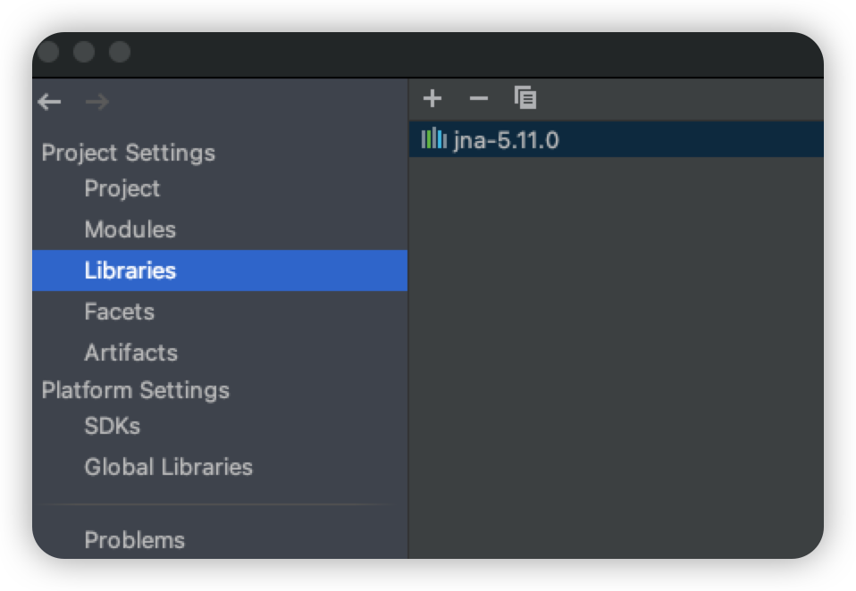

熟悉JNA机制-实现Java调用C：HelloWorld和简单例子
熟悉JNA机制
JNA框架是一个开源的Java框架，是建立在经典的JNI基础之上的一个框架。
JNA使用一个小型的JNI库插桩程序来动态调用本地代码。
JNA是建立在JNI技术基础之上的一个Java类库，它使您可以方便地使用java直接访问动态链接库中的函数。
原来使用JNI，你必须手工用C写一个动态链接库，在C语言中映射Java的数据类型。
JNA中，它提供了一个动态的C语言编写的转发器，可以自动实现Java和C的数据类型映射，不再需要编写C动态链接库。
在Idea中使用JNA：
- 获取到JNA.jar
GitHub - java-native-access/jna: Java Native Access
在Idea创建Java项目，导入JAR包

Idea: File → Project Structure → Libraries → “+”
将下载的jna.jar 加入到项目中在项目src文件夹下，新建Test.java:
1 | |
- 直接运行：
JNA Example：
使用Example
Example入门：Example #1: Send and Receive an Integer
- 新建example.c文件：
1 | |
- 在当前文件夹下终端运行：
1 | |
生成Java调用需要的动态链接库
- 新建Integer类文件：
1 | |
- 运行
过程中出现的问题：
运行出现Native library (darwin-aarch64/liblibtestlib.dylib) not found in resource path问题
- 解决： 将Native.loadLibrary()方法中的name 更改为绝对路径（将“libtestlib” 更换为此文件的绝对路径），即可运行
Java调用C Struct 结构体出现的问题：
运行出现Structure.getFieldOrder() on class Send_Struct.Test_S_S$CLibrary$Example3Struct$ByReference returns names ([]) which do not match declared field names ([value])
此类ByReference问题，在jna 5.x中，需要加@FieldOrder()注解
如在Example #3中：
1 | |
便可运行。
Ref：
https://www.cnblogs.com/lanxuezaipiao/p/3635556.html
https://stackoverflow.nilmap.com/question?dest_url=https://stackoverflow.com/questions/64835834/jna-structure-getfieldorder-does-not-match-declared-field-names
本博客所有文章除特别声明外，均采用 CC BY-SA 4.0 协议 ，转载请注明出处！